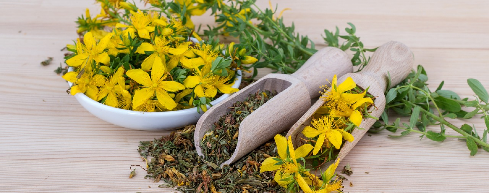

Tè giallo
Il tè giallo è una varietà di tè verde prodotta in Cina, sottoposta a una parziale ossidazione enzimatica. Il suo nome indica una qualità pregiata di tè.
Esempi di tè giallo
• Jun Shan Yin Zhen: Il Jun Shan Yin Zhen è un famoso tè giallo proveniente dalla montagna Jun Shan nella provincia cinese di Hunan. È conosciuto per il suo aspetto elegante e le foglie ricoperte di peluria d'argento. Ha un sapore morbido e dolce.
• Huo Shan Huang Ya: L'Huo Shan Huang Ya è un altro rinomato tè giallo originario della provincia cinese di Anhui. È caratterizzato da foglie grandi e spesse, con un colore giallo dorato. Ha un sapore dolce e tostato, con note di nocciola.
• Mo Gan Huang Ya: Il Mo Gan Huang Ya è un tè giallo prodotto nella provincia di Jiangxi in Cina. Ha un sapore dolce e leggermente erbaceo, con note floreali e un retrogusto piacevolmente fresco. Le foglie sono sottili e appiattite, con un colore giallo brillante.
• Meng Ding Huang Ya: Il Meng Ding Huang Ya è uno dei tè gialli più antichi prodotti nella regione di Sichuan in Cina. È difficile trovarlo proprio perché raccolto in piccole quantità, spesso commercializzato in loco. È noto per il suo sapore morbido e floreale, con note di orchidea e una dolcezza delicata. Le foglie sono sottili, lunghe e di colore giallo-verde.
Sapore e aromi
Il tè giallo ha un sapore morbido e leggermente dolce, con note di fiori e miele, ed è meno erbaceo e meno astringente.
Ha una complessità di gusto che può variare dal processo, ma in generale è caratterizzato da una delicatezza e un equilibrio distintivi.
Il tè giallo contiene una moderata quantità di caffeina, che varia in base alla preparazione e gli consente di essere assunto durante tutto l'arco della giornata.
Benefici del tè giallo
Il tè giallo è un ottimo stimolante per la mente, favorisce il colesterolo buono e aiuta a prevenire le malattie cardiovascolari.
Ha un ottimo apporto di antiossidanti e supporta il sistema immunitario.
Tuttavia, gli studi sul tè giallo sono ancora limitati e poco si sa sui suoi benefici.
Usi culinari
Il tè giallo è generalmente apprezzato come bevanda da gustare da sola, senza l'aggiunta di latte o zucchero. Tuttavia, può anche essere utilizzato in cucina per aromatizzare piatti dolci e salati.
Le foglie di tè giallo possono essere utilizzate per marinare carne, insaporire zuppe o persino aggiungere un tocco unico ai dolci.